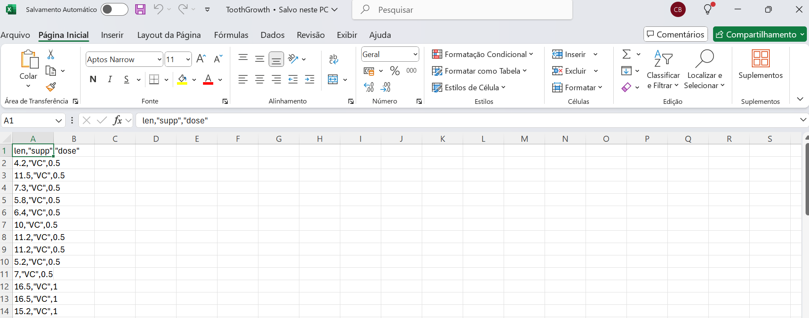

O R permite a leitura de dados em diferentes formatos. Podemos digitá-los diretamente no R ou importá-los de vários tipos de arquivos/extensões. O formato mais adequado para seu banco de dados irá depender do seu tamanho.
Podemos ler aquivos em formato .txt, .xls, .csv, .dbs, de outros softwares estatísticos (SPSS, SAS, etc), entre outros.
Pacotes como readr, readxl, entre outros, serão úteis na leitura dos dados.
Entretanto, vale ressaltar que, para que possamos importar os dados no R para posterior análise, precisamos ter anteriormente definido o problema e os objetivos, coletado os dados (variáveis de interesse) e construído um banco de dados.
A seguir, introduziremos um problema fictício sobre intoxicação alimentar, que será utilizado no decorrer deste material.
2.1 Problema: Surto de intoxicação alimentar estafilocócica durante evento científico
Em novembro de 2018, um surto de intoxicação alimentar por enterotoxina estafilocócica ocorreu após pessoas almoçarem em um simpósio, promovido por uma universidade privada, no município de Verde Oliva.
A alimentação servida foi preparada na cozinha de uma empresa terceirizada e enviada ao local do evento por meio de vans sem refrigeração. O cardápio foi composto por: salada de folhas verdes, tomate, cenoura e pepino, pão francês, medalhão ao molho madeira, macarrão espaguete sem molho, molho de queijo, molho ao sugo, pudim de leite condensado, salada de frutas, suco de laranja e água.
O almoço ocorreu por volta das 13:00h. Os primeiros casos do surto começaram a apresentar sintomas típicos de intoxicação alimentar, como náusea, vômito, cólica abdominal e diarreia, uma hora após a ingestão dos alimentos.
No total, 200 pessoas participaram do simpósio. Das 150 pessoas que almoçaram no local do evento, 50 adoeceram. Foram considerados casos do surto as pessoas que apresentaram vômito e/ou diarreia após terem se alimentado com pelo menos um dos itens servidos no evento.
Com a investigação do surto alimentar pretende-se identificar quais alimentos possivelmente provocaram a intoxicação no evento científico.
Foram coletadas as seguintes variáveis:
id: número de identificação;
caso: não caso(0) e caso(1);
sexo: feminino(0) e masculino(1);
dtnasc: data de nascimento (dd/mm/aaaa);
ocupa: ocupação referida no momento da inscrição;
dtisint: data de início dos sintomas (dd/mm/aaaa);
horaisint: os sintomas tiveram início após quantas horas depois de comer? (em horas);
diarreia: teve diarreia? não(0); sim(1);
colica: teve cólica intestinal? não(0); sim(1);
vomito: teve vômito? não(0); sim(1);
nausea: teve náusea? não(0); sim(1);
cefaleia: teve dor de cabeça/cefaléia? não(0); sim(1);
desidratacao: teve desidratação? não(0); sim(1);
febre: teve febre (temp>37,5C°)? não(0); sim(1);
servsaude: procurou algum serviço de saúde? não(0); sim(1);
gravidade: gravidade do caso - leve(1), moderado(2) ou grave(3)
salada: comeu salada de folhas verdes, tomate, cenoura e pepino? não(0); sim(1);
pao: comeu mini-pão francês? não(0); sim(1);
medalhao: comeu medalhão ao molho madeira? não(0); sim(1);
macarrao: comeu macarrão cozido? não(0); sim(1);
molhoqueijo: comeu molho de queijo? não(0); sim(1);
molhoverm: comeu molho ao sugo? não(0); sim(1);
pudim: comeu pudim de leite condensado? não(0); sim(1);
frutas: comeu salada de frutas? não(0); sim(1);
agua: bebeu água? não(0); sim(1);
suco: bebeu suco de laranja? não(0); sim(1);
hb: valor de hemoglobina (valor de referência 12 – 16 g/dL);
leuco: valor de leucócitos (valor de referência 4.500 – 11.000 /uL);
tgl: valor de triglicérides (valor de referência <175 mg/dL sem jejum)
Alguns dados sobre os comensais estão disponíveis no banco de dados surto.
Faça o download do arquivo surto e salve na pasta criada do seu projeto R.
A seguir utilizaremos o arquivo surto, que contém dados sobre um surto de intoxicação alimentar estafilocócica durante evento científico (dados fictícios).
Exemplo do arquivo de dados no formato do Excel, surto
Primeiro instale o pacote readxl usando o comando install.packages("readxl").
Code
#Carregue o pacote usando a função library(nome_pacote)library(readxl)#Utilize a função read_excel para ler o banco de dados surtosurto<-read_excel("./data/surto.xlsx")#Para visualizar o banco de dados utilize a função View(nome_dados)#View(surto)
Após a importação do arquivo de dados, precisamos verificar se as variáveis foram importadas corretamente, ou seja, quais os tipos/formatos. Para isso, podemos utilizar a função str.
Code
str(surto)#A função str(arq1) é utilizada para mostrar uma descrição do arquivo lido.
Observe que todas as variáveis estão no formato numérico (num), exceto as variáveis dtnasc (formato data, POSIXct), ocupa (formato texto, chr) e dtisint (formato data). Entretanto, o formato numérico não é adequado para algumas variáveis.
As variáveis qualitativas ou categóricas são tratadas como fatores (factor) no R e as variáveis quantitativas ou numéricas são do formato numérico (num).
A seguir, vamos classificar as variáveis de interesse do banco de dados de intoxicação alimentar (surto).
Variável
Tipo
Formato
id
Numérica Ordinal
num
caso
Categórica Nominal
factor
sexo
Categórica Nominal
factor
dtnasc
Data
date
ocupa
Categórica Nominal
factor
dtisint
Data
date
horaisint
Numérica
num
diarreia
Categórica Nominal
factor
colica
Categórica Nominal
factor
vomito
Categórica Nominal
factor
nausea
Categórica Nominal
factor
cefaleia
Categórica Nominal
factor
desidratacao
Categórica Nominal
factor
febre
Categórica Nominal
factor
servsaude
Categórica Nominal
factor
gravidade
Categórica Ordinal
factor
salada
Categórica Nominal
factor
pao
Categórica Nominal
factor
medalhao
Categórica Nominal
factor
macarrao
Categórica Nominal
factor
molhoqueijo
Categórica Nominal
factor
molhoverm
Categórica Nominal
factor
pudim
Categórica Nominal
factor
frutas
Categórica Nominal
factor
agua
Categórica Nominal
factor
suco
Categórica Nominal
factor
hb
Numérica Contínua
num
leuco
Numérica Contínua
num
tgl
Numérica Contínua
num
Agora que já sabemos o tipo das variáveis de interesse, precisamos transformar as variáveis qualitativas/categóricas em “factor”. Para isso, usaremos a função factor; o argumento label da função, permite nomear as categorias das variáveis.
Code
#transformando em factorsurto$caso<-factor(surto$caso)levels(surto$caso)#níveis do fator
[1] "0" "1"
Code
#classificando os níveis do fatorlevels(surto$caso)<-list("Não"="0","Sim"="1")levels(surto$caso)
[1] "Não" "Sim"
Code
#transformando as demais variáveis em fatoressurto$sexo<-factor(surto$sexo, labels=c("Feminino","Masculino"))surto$ocupa<-factor(surto$ocupa)surto$diarreia<-factor(surto$diarreia, labels=c('Não','Sim'))surto$colica<-factor(surto$colica, labels=c('Não','Sim'))surto$vomito<-factor(surto$vomito, labels=c('Não','Sim'))surto$nausea<-factor(surto$nausea, labels=c('Não','Sim'))surto$cefaleia<-factor(surto$cefaleia, labels=c('Não','Sim'))surto$desidratacao<-factor(surto$desidratacao, labels=c('Não','Sim'))surto$febre<-factor(surto$febre, labels=c('Não','Sim'))surto$servsaude<-factor(surto$servsaude, labels=c('Não','Sim'))surto$gravidade<-factor(surto$gravidade, order =TRUE, labels=c('Leve','Moderado',"Grave"))surto$salada<-factor(surto$salada, labels=c('Não','Sim'))surto$pao<-factor(surto$pao, labels=c('Não','Sim'))surto$medalhao<-factor(surto$medalhao, labels=c('Não','Sim'))surto$macarrao<-factor(surto$macarrao, labels=c('Não','Sim'))surto$molhoqueijo<-factor(surto$molhoqueijo, labels=c('Não','Sim'))surto$molhoverm<-factor(surto$molhoverm, labels=c('Não','Sim'))surto$pudim<-factor(surto$pudim, labels=c('Não','Sim'))surto$frutas<-factor(surto$frutas, labels=c('Não','Sim'))surto$agua<-factor(surto$agua, labels=c('Não','Sim'))surto$suco<-factor(surto$suco, labels=c('Não','Sim'))
2.3 Importando .csv
O pacote utils é utilizado automaticamente ao iniciar o R, assim podemos utilizar a função read.csv para ler arquivos .csv.
A seguir utilizaremos o arquivo ToothGrowth.csv, que contém dados de um experimento sobre o efeito de vitamina C no crescimento dos dentes de porquinhos-da-índia. Especificamente, o experimento examinou o comprimento dos dentes (medido em milímetros) em diferentes condições de suplementação de vitamina C. (Saiba mais usando a função help do R: help(ToothGrowth))
Variáveis:
len: O comprimento do dente (numérico).
supp: O tipo de suplemento de vitamina C administrado (fator com dois níveis):
VC: Vitamina C fornecida diretamente (via solução de ácido ascórbico).
OJ: Suplemento fornecido na forma de suco de laranja.
dose: A dose de vitamina C administrada (numérica), em miligramas por dia (mg/dia), com três valores possíveis:
0.5: Dose baixa (0,5 mg).
1.0: Dose média (1,0 mg).
2.0: Dose alta (2,0 mg).
Este arquivo é composto por campos que são separados por vírgula.

2.3.1 Funções
read.csv(file, header = TRUE, sep = “,”, quote = “"”, dec = “.”, fill = TRUE)
read.csv2(file, header = TRUE, sep = “;”, quote = “"”, dec = “,”, fill = TRUE)
Atenção
- file: nome do arquivo
- header: um valor lógico indicando quando o arquivo contém os nomes das variáveis na primeira linha
- sep: caractere de separação
- quote: conjunto de caracteres de citação
- dec: caractere usado em arquivos para pontos decimais
- fill: valor lógico que indica se as linhas possuem comprimentos diferentes (nesse caso, espaços em branco são implicitamente adicionados)
Utilizando o parâmentro stringAsFactors, podemos solicitar ao R que os campos de string sejam transformados em fatores. Caso contrário o arquivo será lido apenas como string.
# Importando dados no RO R permite a leitura de dados em diferentes formatos. Podemos digitá-los diretamente no R ou importá-los de vários tipos de arquivos/extensões. O formato mais adequado para seu banco de dados irá depender do seu tamanho.Podemos ler aquivos em formato .txt, .xls, .csv, .dbs, de outros *softwares* estatísticos (SPSS, SAS, etc), entre outros.Pacotes como `readr`, `readxl`, entre outros, serão úteis na leitura dos dados.Entretanto, vale ressaltar que, para que possamos importar os dados no R para posterior análise, precisamos ter anteriormente definido o problema e os objetivos, coletado os dados (variáveis de interesse) e construído um banco de dados.A seguir, introduziremos um problema fictício sobre intoxicação alimentar, que será utilizado no decorrer deste material.## Problema: Surto de intoxicação alimentar estafilocócica durante evento científicoEm novembro de 2018, um surto de intoxicação alimentar por enterotoxina estafilocócica ocorreu após pessoas almoçarem em um simpósio, promovido por uma universidade privada, no município de Verde Oliva.A alimentação servida foi preparada na cozinha de uma empresa terceirizada e enviada ao local do evento por meio de vans sem refrigeração. O cardápio foi composto por: salada de folhas verdes, tomate, cenoura e pepino, pão francês, medalhão ao molho madeira, macarrão espaguete sem molho, molho de queijo, molho ao sugo, pudim de leite condensado, salada de frutas, suco de laranja e água.O almoço ocorreu por volta das 13:00h. Os primeiros casos do surto começaram a apresentar sintomas típicos de intoxicação alimentar, como náusea, vômito, cólica abdominal e diarreia, uma hora após a ingestão dos alimentos.No total, 200 pessoas participaram do simpósio. Das 150 pessoas que almoçaram no local do evento, 50 adoeceram. Foram considerados casos do surto as pessoas que apresentaram vômito e/ou diarreia após terem se alimentado com pelo menos um dos itens servidos no evento.Com a investigação do surto alimentar pretende-se identificar quais alimentos possivelmente provocaram a intoxicação no evento científico.Foram coletadas as seguintes variáveis:- id: número de identificação;\- caso: não caso(0) e caso(1);\- sexo: feminino(0) e masculino(1);\- dtnasc: data de nascimento (dd/mm/aaaa);\- ocupa: ocupação referida no momento da inscrição;\- dtisint: data de início dos sintomas (dd/mm/aaaa);\- horaisint: os sintomas tiveram início após quantas horas depois de comer? (em horas);- diarreia: teve diarreia? não(0); sim(1);\- colica: teve cólica intestinal? não(0); sim(1);\- vomito: teve vômito? não(0); sim(1);\- nausea: teve náusea? não(0); sim(1);\- cefaleia: teve dor de cabeça/cefaléia? não(0); sim(1);\- desidratacao: teve desidratação? não(0); sim(1);\- febre: teve febre (temp\>37,5C°)? não(0); sim(1);\- servsaude: procurou algum serviço de saúde? não(0); sim(1);\- gravidade: gravidade do caso - leve(1), moderado(2) ou grave(3)\- salada: comeu salada de folhas verdes, tomate, cenoura e pepino? não(0); sim(1);\- pao: comeu mini-pão francês? não(0); sim(1);\- medalhao: comeu medalhão ao molho madeira? não(0); sim(1);\- macarrao: comeu macarrão cozido? não(0); sim(1);\- molhoqueijo: comeu molho de queijo? não(0); sim(1);\- molhoverm: comeu molho ao sugo? não(0); sim(1);\- pudim: comeu pudim de leite condensado? não(0); sim(1);- frutas: comeu salada de frutas? não(0); sim(1);\- agua: bebeu água? não(0); sim(1);\- suco: bebeu suco de laranja? não(0); sim(1);\- hb: valor de hemoglobina (valor de referência 12 – 16 g/dL);\- leuco: valor de leucócitos (valor de referência 4.500 – 11.000 /uL);\- tgl: valor de triglicérides (valor de referência \<175 mg/dL sem jejum)Alguns dados sobre os comensais estão disponíveis no banco de dados [surto](https://docs.google.com/spreadsheets/d/1Xelz4_hMWR6wwfYBsMtIgvcbU5qk0_VJ/edit?usp=sharing&ouid=107277038879352988537&rtpof=true&sd=true).Faça o *download* do arquivo [surto](https://docs.google.com/spreadsheets/d/1Xelz4_hMWR6wwfYBsMtIgvcbU5qk0_VJ/edit?usp=sharing&ouid=107277038879352988537&rtpof=true&sd=true) e salve na pasta criada do seu projeto R.## Importando .xlsxO pacote `readxl` é utilizado para ler arquivos excel em R. Assim podemos utilizar a função `read_excel` para ler tais arquivos. (Ver: <https://cran.r-project.org/web/packages/readxl/readxl.pdf> e <https://www.rdocumentation.org/packages/readxl/versions/0.1.1/topics/read_excel)>A seguir utilizaremos o arquivo [surto](https://docs.google.com/spreadsheets/d/1Xelz4_hMWR6wwfYBsMtIgvcbU5qk0_VJ/edit?usp=sharing&ouid=107277038879352988537&rtpof=true&sd=true), que contém dados sobre um surto de intoxicação alimentar estafilocócica durante evento científico (dados fictícios).</center>](https://uploaddeimagens.com.br/images/002/966/052/original/dados_excel.png?1605622385){#id .class width="80%" height="80%"}</center>Primeiro instale o pacote `readxl` usando o comando `install.packages("readxl")`.```{r}#Carregue o pacote usando a função library(nome_pacote)library(readxl) #Utilize a função read_excel para ler o banco de dados surtosurto <-read_excel("./data/surto.xlsx") #Para visualizar o banco de dados utilize a função View(nome_dados)#View(surto) ```Após a importação do arquivo de dados, precisamos verificar se as variáveis foram importadas corretamente, ou seja, quais os tipos/formatos. Para isso, podemos utilizar a função *str*.```{r}str(surto) #A função str(arq1) é utilizada para mostrar uma descrição do arquivo lido.```Observe que todas as variáveis estão no formato numérico (num), exceto as variáveis dtnasc (formato data, POSIXct), ocupa (formato texto, chr) e dtisint (formato data). Entretanto, o formato numérico não é adequado para algumas variáveis.As variáveis qualitativas ou categóricas são tratadas como fatores (factor) no R e as variáveis quantitativas ou numéricas são do formato numérico (num).A seguir, vamos classificar as variáveis de interesse do banco de dados de intoxicação alimentar ([surto](https://docs.google.com/spreadsheets/d/1Xelz4_hMWR6wwfYBsMtIgvcbU5qk0_VJ/edit?usp=sharing&ouid=107277038879352988537&rtpof=true&sd=true)).```{r echo=FALSE}variavel <- names(surto)tipo <- c("Numérica Ordinal", "Categórica Nominal", "Categórica Nominal", "Data", "Categórica Nominal", "Data", "Numérica", rep("Categórica Nominal",8), "Categórica Ordinal", rep("Categórica Nominal",10), rep("Numérica Contínua",3))formato <- c("num", "factor", "factor", "date", "factor", "date", "num", rep("factor",19), rep("num",3) )tab <- data.frame(variavel,tipo,formato)names(tab) <- c("Variável", "Tipo", "Formato")knitr::kable(tab)```Agora que já sabemos o tipo das variáveis de interesse, precisamos transformar as variáveis qualitativas/categóricas em "factor". Para isso, usaremos a função `factor`; o argumento *label* da função, permite nomear as categorias das variáveis.```{r}#transformando em factorsurto$caso <-factor(surto$caso)levels(surto$caso) #níveis do fator#classificando os níveis do fatorlevels(surto$caso) <-list("Não"="0","Sim"="1")levels(surto$caso)``````{r}#transformando as demais variáveis em fatoressurto$sexo <-factor(surto$sexo, labels=c("Feminino","Masculino"))surto$ocupa <-factor(surto$ocupa)surto$diarreia <-factor(surto$diarreia, labels=c('Não','Sim'))surto$colica <-factor(surto$colica, labels=c('Não','Sim'))surto$vomito <-factor(surto$vomito, labels=c('Não','Sim'))surto$nausea <-factor(surto$nausea, labels=c('Não','Sim'))surto$cefaleia <-factor(surto$cefaleia, labels=c('Não','Sim'))surto$desidratacao <-factor(surto$desidratacao, labels=c('Não','Sim'))surto$febre <-factor(surto$febre, labels=c('Não','Sim'))surto$servsaude <-factor(surto$servsaude, labels=c('Não','Sim'))surto$gravidade <-factor(surto$gravidade, order =TRUE,labels=c('Leve','Moderado',"Grave"))surto$salada <-factor(surto$salada, labels=c('Não','Sim'))surto$pao <-factor(surto$pao, labels=c('Não','Sim'))surto$medalhao <-factor(surto$medalhao, labels=c('Não','Sim'))surto$macarrao <-factor(surto$macarrao, labels=c('Não','Sim'))surto$molhoqueijo <-factor(surto$molhoqueijo, labels=c('Não','Sim'))surto$molhoverm <-factor(surto$molhoverm, labels=c('Não','Sim'))surto$pudim <-factor(surto$pudim, labels=c('Não','Sim'))surto$frutas <-factor(surto$frutas, labels=c('Não','Sim'))surto$agua <-factor(surto$agua, labels=c('Não','Sim'))surto$suco <-factor(surto$suco, labels=c('Não','Sim'))```## Importando .csvO pacote `utils` é utilizado automaticamente ao iniciar o R, assim podemos utilizar a função `read.csv` para ler arquivos .csv.A seguir utilizaremos o arquivo [ToothGrowth.csv](https://drive.google.com/file/d/1JDRdA2GGr_DV5kK2jVxzq9cgqkdSjjvF/view?usp=sharing), que contém dados de um experimento sobre o efeito de vitamina C no crescimento dos dentes de porquinhos-da-índia. Especificamente, o experimento examinou o comprimento dos dentes (medido em milímetros) em diferentes condições de suplementação de vitamina C. (Saiba mais usando a função `help` do R: `help(ToothGrowth)`)**Variáveis:**- **len**: O comprimento do dente (numérico).- **supp**: O tipo de suplemento de vitamina C administrado (fator com dois níveis): - `VC`: Vitamina C fornecida diretamente (via solução de ácido ascórbico). - `OJ`: Suplemento fornecido na forma de suco de laranja.- **dose**: A dose de vitamina C administrada (numérica), em miligramas por dia (mg/dia), com três valores possíveis: - `0.5`: Dose baixa (0,5 mg). - `1.0`: Dose média (1,0 mg). - `2.0`: Dose alta (2,0 mg).Este arquivo é composto por campos que são separados por vírgula.### Funções`read.csv(file, header = TRUE, sep = “,”, quote = “"”, dec = “.”, fill = TRUE)``read.csv2(file, header = TRUE, sep = “;”, quote = “"”, dec = “,”, fill = TRUE)`**Atenção**\- file: nome do arquivo\- header: um valor lógico indicando quando o arquivo contém os nomes das variáveis na primeira linha\- sep: caractere de separação\- quote: conjunto de caracteres de citação\- dec: caractere usado em arquivos para pontos decimais\- fill: valor lógico que indica se as linhas possuem comprimentos diferentes (nesse caso, espaços em branco são implicitamente adicionados)```{r}dados1 <-read.csv("./data/ToothGrowth.csv")head(dados1)str(dados1)```#### Utilizando stringsAsFactorsUtilizando o parâmentro stringAsFactors, podemos solicitar ao R que os campos de string sejam transformados em fatores. Caso contrário o arquivo será lido apenas como string.```{r}dados2 <-read.csv("./data/ToothGrowth.csv",stringsAsFactors =TRUE)head(dados2)str(dados2) #A função str(arq1) é utilizada para mostrar uma descrição do arquivo lido.```